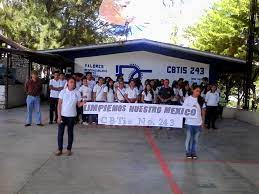

PORTAL DEL CENTRO DE BACHILLERATO TECNOLOGICO INDUSTRIAL Y DE SERVICIOS NUMERO 243.


Proyectos
Conocenos
Construye T
Becas
MISION
Formar personas con conocimientos Tecnologicos en las areas industrial, comercial y de servicios, a traves de la preparacion de bachilleres y profesionales tecnicos, con el fin de contribuir al desarrollo sustentable del pais.VISION
Ser una institucion de Educacion Media superior, certificada, orientada al aprendizaje y el desarrollo de conocimientos Tecnologicos y Humanisticos.REDES SOCIALES
BLOG
PROGRAMACIÓN

Ocultar Texto
Mostrar Texto
La carrera de Técnico en programación ofrece las competencias profesionales que permiten al estudiante realizar actividades dirigidas a: analizar, diseñar, desarrollar, instalar y mantener software de aplicación tomando como base los requerimientos del usuario.
Al término de la carrera el egresado podrá laborar en compañías y negocios públicos o privadas, dedicados al desarrollo de software y en el análisis, diseño e implementación de sistemas de información de proposito general y particular; así mismo tienes la opción de titularte como: Técnico en Programación o continuar con tus estudios universitarios en las siguientes carreras: Ing. Civil, Ing. Electromecánico, Ing. Industrial, Ing. Electricista, Lic. en Informática, Arquitectura o en cualquier carrera del Área Físico - matemáticas.
VISITA NUESTRO VIDEO, PARA SABER MAS A CERCA DE LA PROGRAMACION
EN EL SIGUIENTE BOTON PUEDES DESCARGAR EL PROGRAMA DE ESTUDIOS PARA VERIFICAR LAS MATERIAS QUE DEBES CURSAR EN ESTA AREA

Calle central poniente s/n barrio san francisco c.p. 30900 (teléfono y fax: 962-64-10262)
e-mal institucional: cbtis243.dir@uemstis.sems.gob.mx
e-mal institucional: cbtis243.dir@uemstis.sems.gob.mx